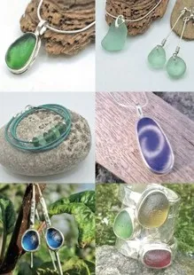
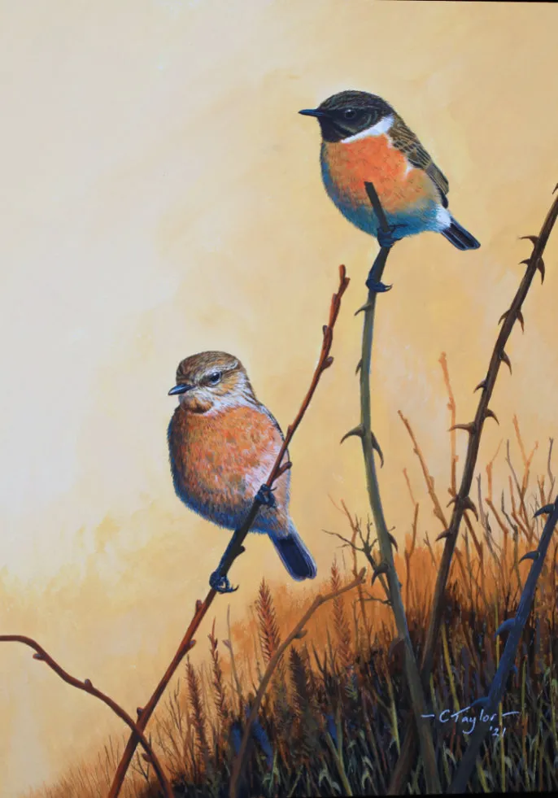

Seapig (Cara White)

Yn arbenigo mewn gemwaith morwydr naturiol. Arddangosiadau drilio ar gael ar gais.
Ethos Seapig ydy Uwchgylchu, Ailgylchu, Moesegol, Cynaliadwy; ac mae gennym ni eco-siop sy’n arddangos gwneuthurwyr eraill sy’n rhannu’r un ethos ecogyfeillgar â ni.
Specialising in bespoke seaglass jewellery using naturally tumbled seaglass. Drilling demonstrations available on request.
The Seapig ethos is Upcycled, Recycled, Ethical, Sustainable; and we have an eco-store showcasing other planet-friendly makers.
07736 964106
info@seapig-anglesey.com
SEAPIG, GROESLON, CEIRCHIOG, NR. RHOSNEIGR, LL63 5UH
Yn hawdd ei gyrraedd ar y brif ffordd sy’n cysylltu’r A55 a Rhosneigr. Rydym ar yr ochr chwith wrth i chi yrru i gyfeiriad Rhosneigr. Digon o le parcio (gall cerbydau mwy barcio yn y maes parcio gorlif, er mwyn symud yn haws)
Easily accessible on the main road connecting the A55 and Rhosneigr. We are on the lefthand side as you drive towards Rhosneigr. Plenty of parking (larger vehicles can park in our overflow field, for easier maneuvering).
Celia Nancarrow

Dechreuodd fy nghariad at Ynys Môn 50 mlynedd yn ôl - mae ei awyrgylch unigryw yn ysbrydoli fy argraffiadau, paentiadau a brasluniau gwreiddiol, Mae’n wlad o hanes cryf, gyda thirweddau gwych, lliwgar, cefndiroedd mynydd, awyr a machlud.
My love of Anglesey started 50 yrs ago - its unique atmosphere inspires my original prints, paintings and sketches.It’s a land of strong history, with wonderful, colourful landscapes, mountain backdrops, skies and sunsets.
07718 761427
celianancarrow@gmail.com
SEAPIG, GROESLON, CEIRCHIOG, NR. RHOSNEIGR, LL63 5UH
Yn hawdd ei gyrraedd ar y brif ffordd sy’n cysylltu’r A55 a Rhosneigr. Rydym ar yr ochr chwith wrth i chi yrru i gyfeiriad Rhosneigr. Digon o le parcio (gall cerbydau mwy barcio yn y maes parcio gorlif, er mwyn symud yn haws)
Easily accessible on the main road connecting the A55 and Rhosneigr. We are on the lefthand side as you drive towards Rhosneigr. Plenty of parking (larger vehicles can park in our overflow field, for easier maneuvering).
Paula Cutler
Mae Paula yn mwynhau tynnu lluniau o’r golygfeydd o amgylch llwybrau arfordirol a thraethau Gogledd Cymru.
Mae’n cymryd agwedd syml a manteisgar at ei gwaith ac yn defnyddio papur ‘giclee’ yn ei phrintio sy’n dod â’r lliwiau a’r awyrgylch yn fyw.
Paula enjoys taking photographs of the scenery around the coastal paths and beaches of North Wales.
She takes a simple and opportunistic approach to her work and uses ‘giclee’ paper in her printing which brings to life the colours and atmosphere she experiences
07769 745888
paulacutlerphoto@gmail.com
SEAPIG, GROESLON, CEIRCHIOG, NR. RHOSNEIGR, LL63 5UH
Yn hawdd ei gyrraedd ar y brif ffordd sy’n cysylltu’r A55 a Rhosneigr. Rydym ar yr ochr chwith wrth i chi yrru i gyfeiriad Rhosneigr. Digon o le parcio (gall cerbydau mwy barcio yn y maes parcio gorlif, er mwyn symud yn haws)
Easily accessible on the main road connecting the A55 and Rhosneigr. We are on the lefthand side as you drive towards Rhosneigr. Plenty of parking (larger vehicles can park in our overflow field, for easier maneuvering).